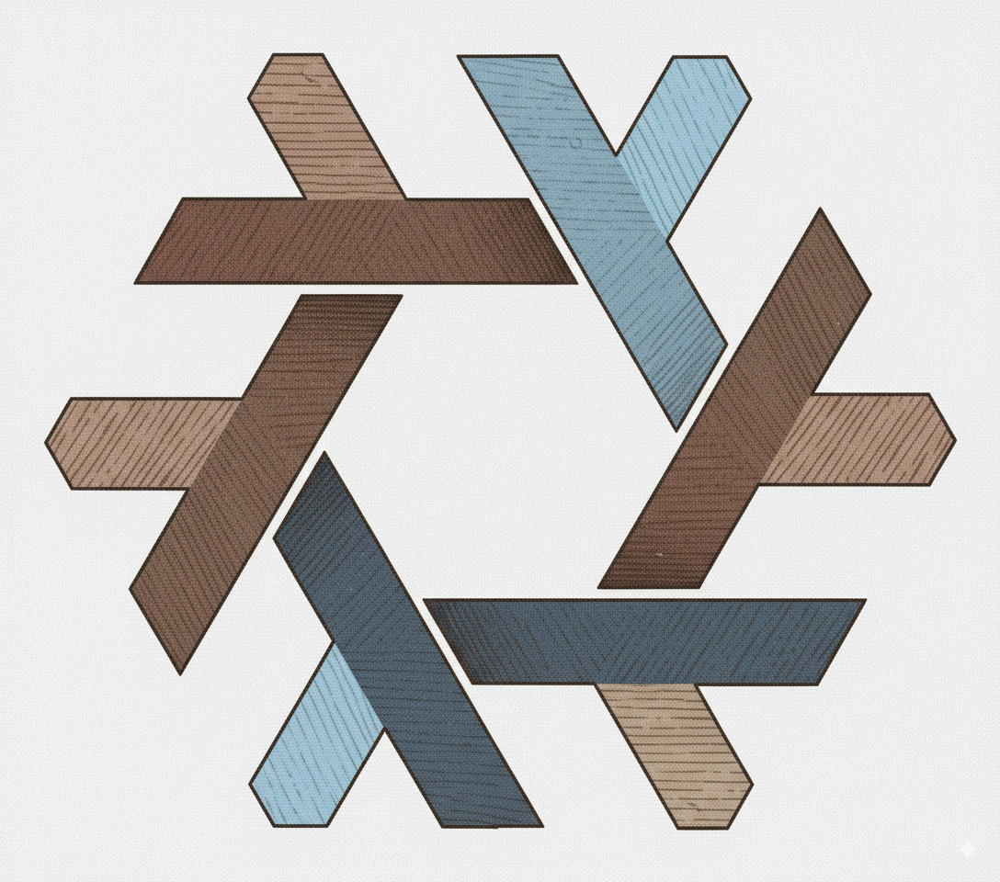

1 Reproducibility with Nix
1.1 Learning Outcomes
By the end of this chapter, you will:
- Understand the need for environment reproducibility in modern workflows
- Install Nix
- Use
{rix}to generatedefault.nixfiles - Build cross-language environments for data work or software development
1.2 Why Reproducibility? Why Nix? (2h)
1.2.1 Motivation: Reproducibility in Scientific and Data Workflows
To ensure that a project is reproducible you need to deal with at least four things:
- Make sure that the required/correct version of R (or any other language) is installed;
- Make sure that the required versions of packages are installed;
- Make sure that system dependencies are installed (for example, you’d need a working Java installation to install the rJava R package on Linux);
- Make sure that you can install all of this for the hardware you have on hand.
But in practice, one or most of these bullet points are missing from projects. The goal of this course is to learn how to fullfill all the requirements to build reproducible projects.
1.2.2 Problems with Ad-Hoc Tools
Tools like Python’s venv or R’s renv only deal with some pieces of the reproducibility puzzle. Often, they assume an underlying OS, do not capture native system dependencies (like libxml2, pandoc, or curl), and require users to “rebuild” their environments from partial metadata. Docker helps but introduces overhead, security challenges, and complexity.
Traditional approaches fail to capture the entire dependency graph of a project in a deterministic way. This leads to “it works on my machine” syndromes, onboarding delays, and subtle bugs.
1.2.3 Nix, a declarative package manager
Nix is a tool for reproducible builds and development environments, often introduced as a package manager. It captures complete dependency trees, from your programming language interpreter to every system-level library you rely on. With Nix, environments are not recreated from documentation, but rebuilt precisely from code.
Nix can be installed on Linux distributions, macOS and it even works on Windows if you enable WSL2. In this course, we will use Nix mostly as a package manager (but towards the end also as a build automatino tool).
What’s a package manager? If you’re not a Linux user, you may not know. Let me explain it this way: in R, if you want to install a package to provide some functionality not included with a vanilla installation of R, you’d run this:
install.packages("dplyr")It turns out that Linux distributions, like Ubuntu for example, work in a similar way, but for software that you’d usually install using an installer (at least on Windows). For example you could install Firefox on Ubuntu using:
sudo apt-get install firefox(there’s also graphical interfaces that make this process “more user-friendly”). In Linux jargon, packages are simply what we call software (or I guess it’s all “apps” these days). These packages get downloaded from so-called repositories (think of CRAN, the repository of R packages) but for any type of software that you might need to make your computer work: web browsers, office suites, multimedia software and so on.
So Nix is just another package manager that you can use to install software.
But what interests us is not using Nix to install Firefox, but instead to install R and the R packages that we require for our analysis (or any other programming language that we need). But why use Nix instead of the usual ways to install software on our operating systems?
The first thing that you should know is that Nix’s repository, nixpkgs, is huge. Humongously huge. As I’m writing these lines, there’s more than 120’000 pieces of software available, and the entirety of CRAN and Bioconductor is also available through nixpkgs. So instead of installing R as you usually do and then use install.packages() to install packages, you could use Nix to handle everything. But still, why use Nix at all?
Nix has an interesting feature: using Nix, it is possible to install software in (relatively) isolated environments. So using Nix, you can install as many versions of R and R packages that you need. Suppose that you start working on a new project. As you start the project, with Nix, you would install a project-specific version of R and R packages that you would only use for that particular project. If you switch projects, you’d switch versions of R and R packages.
However Nix has quite a steep learning curve, so this is why for the purposes of this course we are going to use an R package called {rix} to set up reproducible environments.
1.2.4 The rix package
The idea of {rix} is for you to declare the environment you need using the provided rix() function. rix() is the package’s main function and generates a file called default.nix which is then used by the Nix package manager to build that environment. Ideally, you would set up such an environment for each of your projects. You can then use this environment to either work interactively, or run R or Python scripts. It is possible to have as many environments as projects, and software that is common to environments will simply be re-used and not get re-installed to save space. Environments are isolated for each other, but can still interact with your system’s files, unlike with Docker where a volume must be mounted. Environments can also interact with the software installed on your computer through the usual means, which can sometimes lead to issues. For example, if you already have R installed, and a user library of R packages, more caution is required to properly use environments managed by Nix.
You don’t need to have R installed or be an R user to use {rix}. If you have Nix installed on your system, it is possible to “drop” into a temporary environment with R and {rix} available and generate the required Nix expression from there.
But first, let’s install Nix and try to use temporary shells.
1.2.5 Installing Nix
If you are on Windows, you need the Windows Subsystem for Linux 2 (WSL2) to run Nix. If you are on a recent version of Windows 10 or 11, you can simply run this as an administrator in PowerShell:
wsl --installYou can find further installation notes at this official MS documentation.
We recommend to activate systemd in Ubuntu WSL2, mainly because this supports other users than root running Nix. To set this up, please do as outlined this official Ubuntu blog entry:
# in WSL2 Ubuntu shell
sudo -i
nano /etc/wsl.confThis will open the /etc/wsl.conf in a nano, a command line text editor. Add the following line:
[boot]
systemd=trueSave the file with CTRL-O and then quit nano with CTRL-X. Then, type the following line in powershell:
wsl --shutdownand then relaunch WSL (Ubuntu) from the start menu.
Installing (and uninstalling) Nix is quite simple, thanks to the installer from Determinate Systems, a company that provides services and tools built on Nix, and works the same way on Linux (native or WSL2) and macOS.
Do not use your operating system’s package manager to install Nix. Instead, simply open a terminal and run the following line (on Windows, if you cannot or have decided not to activate systemd, then you have to append --init none to the command. You can find more details about this on The Determinate Nix Installer page):
curl --proto '=https' --tlsv1.2 -sSf \
-L https://install.determinate.systems/nix | \
sh -s -- installThen, install the cachix client and configure the rstats-on-nix cache: this will install binary versions of many R packages which will speed up the building process of environments:
nix-env -iA cachix -f https://cachix.org/api/v1/installthen use the cache:
cachix use rstats-on-nixYou only need to do this once per machine you want to use {rix} on. Many thanks to Cachix for sponsoring the rstats-on-nix cache!
1.2.6 Temporary shells
You now have Nix installed; before continuing, it let’s see if everything works (close all your terminals and reopen them) by droping into a temporary shell with a tool you likely have not installed on your machine.
Open a terminal and run:
which slyou will likely see something like this:
which: no sl in ....now run this:
nix-shell -p sland then again:
which slthis time you should see something like:
/nix/store/cndqpx74312xkrrgp842ifinkd4cg89g-sl-5.05/bin/slThis is the path to the sl binary installed through Nix. The path starts with /nix/store: the Nix store is where all the software installed through Nix is stored. Now type sl and see what happens!
You can find the list of available packages here.
1.3 Session 1.2 – Dev Environments with Nix (2h)
1.3.1 Some Nix concepts
While temporary shells are useful for quick testing, this is not how Nix is typically used in practice. Nix is a declarative package manager: users specify what they want to build, and Nix takes care of the rest.
To do so, users write files called default.nix that contain the a so-called Nix expression. This expression will contain the definition of a (or several) derivations.
In Nix terminology, a derivation is a specification for running an executable on precisely defined input files to repeatably produce output files at uniquely determined file system paths. (source)
In simpler terms, a derivation is a recipe with precisely defined inputs, steps, and a fixed output. This means that given identical inputs and build steps, the exact same output will always be produced. To achieve this level of reproducibility, several important measures must be taken:
- All inputs to a derivation must be explicitly declared.
- Inputs include not just data files, but also software dependencies, configuration flags, and environment variables, essentially anything necessary for the build process.
- The build process takes place in a hermetic sandbox to ensure the exact same output is always produced.
The next sections of this document explain these three points in more detail.
1.3.2 Derivations
Here is an example of a simple Nix expression:
let
pkgs = import (fetchTarball "https://github.com/rstats-on-nix/nixpkgs/archive/2025-04-11.tar.gz") {};
in
pkgs.stdenv.mkDerivation {
name = "filtered_mtcars";
buildInputs = [ pkgs.gawk ];
dontUnpack = true;
src = ./mtcars.csv;
installPhase = ''
mkdir -p $out
awk -F',' 'NR==1 || $9=="1" { print }' $src > $out/filtered.csv
'';
}I won’t go into details here, but what’s important is that this code uses awk, a common Unix data processing tool, to filter the mtcars.csv file to keep only rows where the 9th column (the am column) equals 1. As you can see, a significant amount of boilerplate code is required to perform this simple operation. However, this approach is completely reproducible: the dependencies are declared and pinned to a specific dated branch of our rstats-on-nix/nixpkgs fork (more on this later), and the only thing that could make this pipeline fail (though it’s a bit of a stretch to call this a pipeline) is if the mtcars.csv file is not provided to it. This expression can be instantiated into a derivation, and the derivation is then built into the actual output that interests us, namely the filtered mtcars data.
The derivation above uses the Nix builtin function mkDerivation: as its name implies, this function makes a derivation. But there is also mkShell, which is the function that builds a shell instead. Nix expressions that built a shell is the kind of expressions {rix} generates for you.
1.3.3 Using {rix} to generate development environments
If you have successfully installed Nix, but don’t have yet R installed on your system, you could install R as you would usually do on your operating system, and then install the {rix} package, and from there, generate project-specific expressions and build them. But you could also install R using Nix. Running the following line in a terminal will drop you in an interactive R session that you can use to start generating expressions:
nix-shell -p R rPackages.rixThis will drop you in a temporary shell with R and {rix} available. Navigate to an empty directory to help a project, call it rix-session-1:
mkdir rix-session-1and start R and load {rix}:
Rlibrary(rix)you can now generate an expression by running the following code:
rix(
date = "2025-06-02",
r_pkgs = c("dplyr", "ggplot2"),
py_conf = list(
py_version = "3.13",
py_pkgs = c("polars", "great-tables")
),
ide = "positron",
project_path = ".",
overwrite = TRUE
)This will write a file called default.nix in your project’s directory. This default.nix contains a Nix expression which will build a shell that comes with R, {dplyr} and {ggplot2} as they were on the the 2nd of June 2025 on CRAN. This will also add Python 3.13 and the ploars and great-tables Python packages as they were at the time in nixpkgs (more on this later). Finally, this also add the Positron IDE, which is a fork of VS Code for data science. This is just an example, and you can use another IDE if you wish. See this vignette for learning how to setup your IDE with Nix.
1.3.4 Using nix-shell to Launch Environments
Once your file is in place, simply run:
nix-shellThis gives you an isolated shell session with all declared packages available. You can test code, explore APIs, or install further tools within this session.
1.3.5 Pinning with nixpkgs
To ensure long-term reproducibility, pin the version of Nixpkgs used. Replace <nixpkgs> with a fixed import:
let
pkgs = import (fetchTarball "https://github.com/rstats-on-nix/nixpkgs/archive/2025-06-02.tar.gz") {};
in
pkgs.mkShell {
buildInputs = [ pkgs.r pkgs.rPackages.dplyr ];
}This avoids unexpected updates and lets others reproduce your environment exactly.
1.4 Hands-On Exercises
- Extend your previous
shell.nixto addrandrPackages.dplyr - Add Python with
numpyandpytest - Write a one-liner R and Python script and run them inside
nix-shell - Share your folder with a partner; verify their shell behaves identically
- Pin your nixpkgs version and commit the change